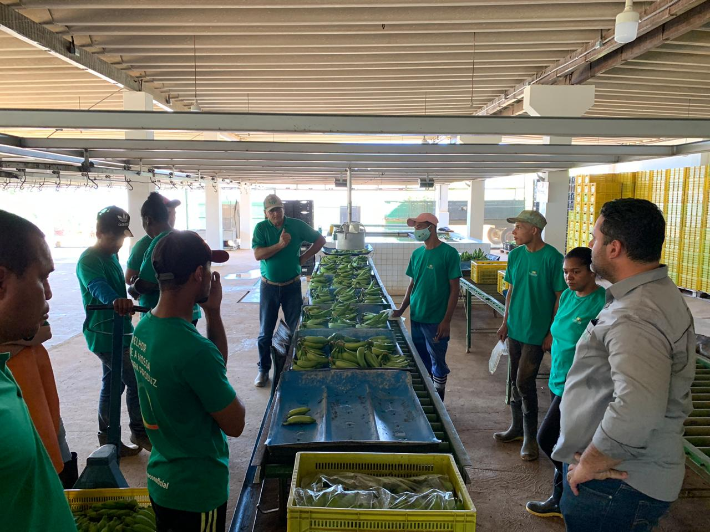
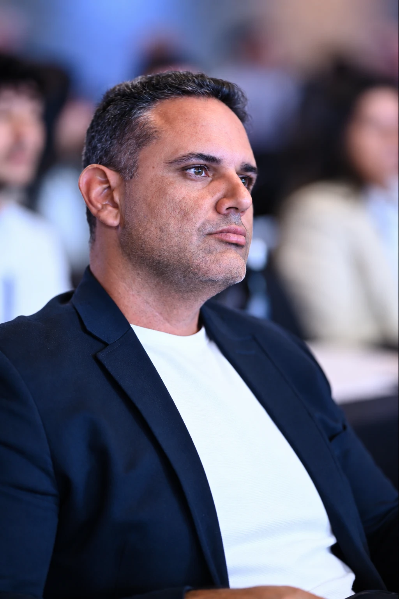
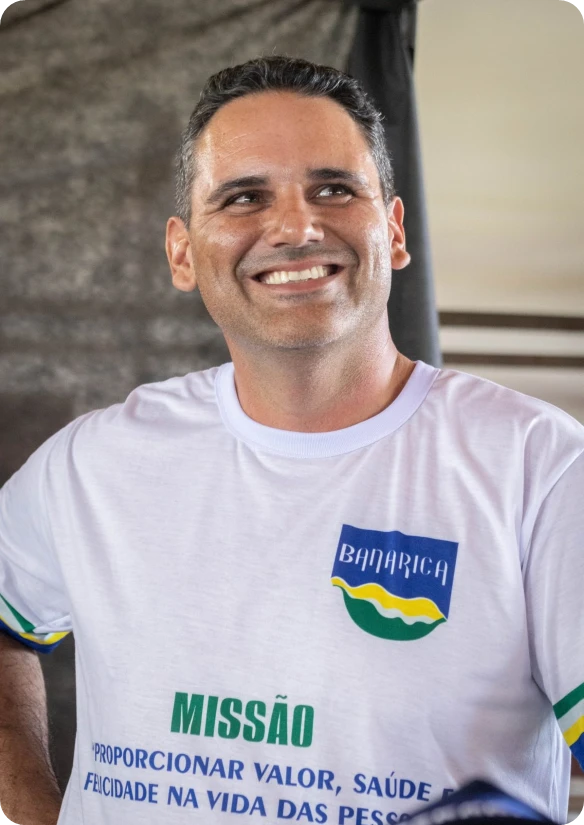
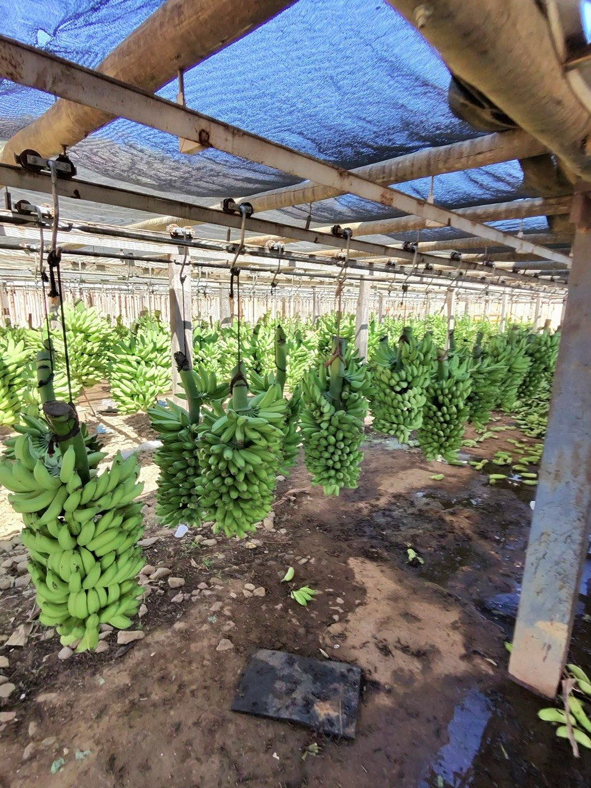
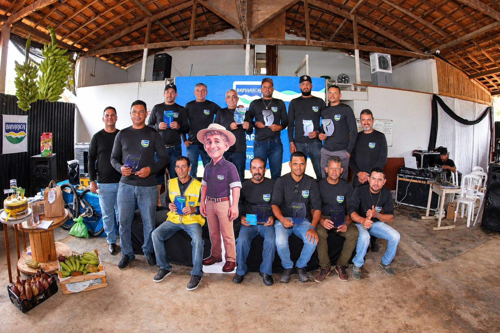
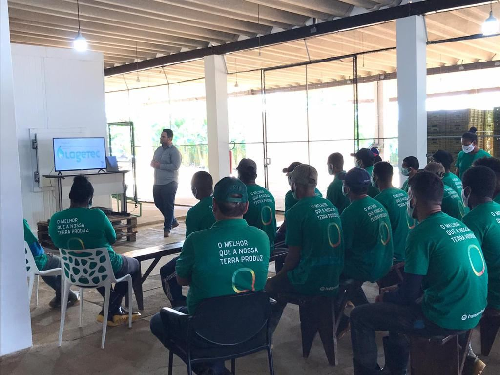
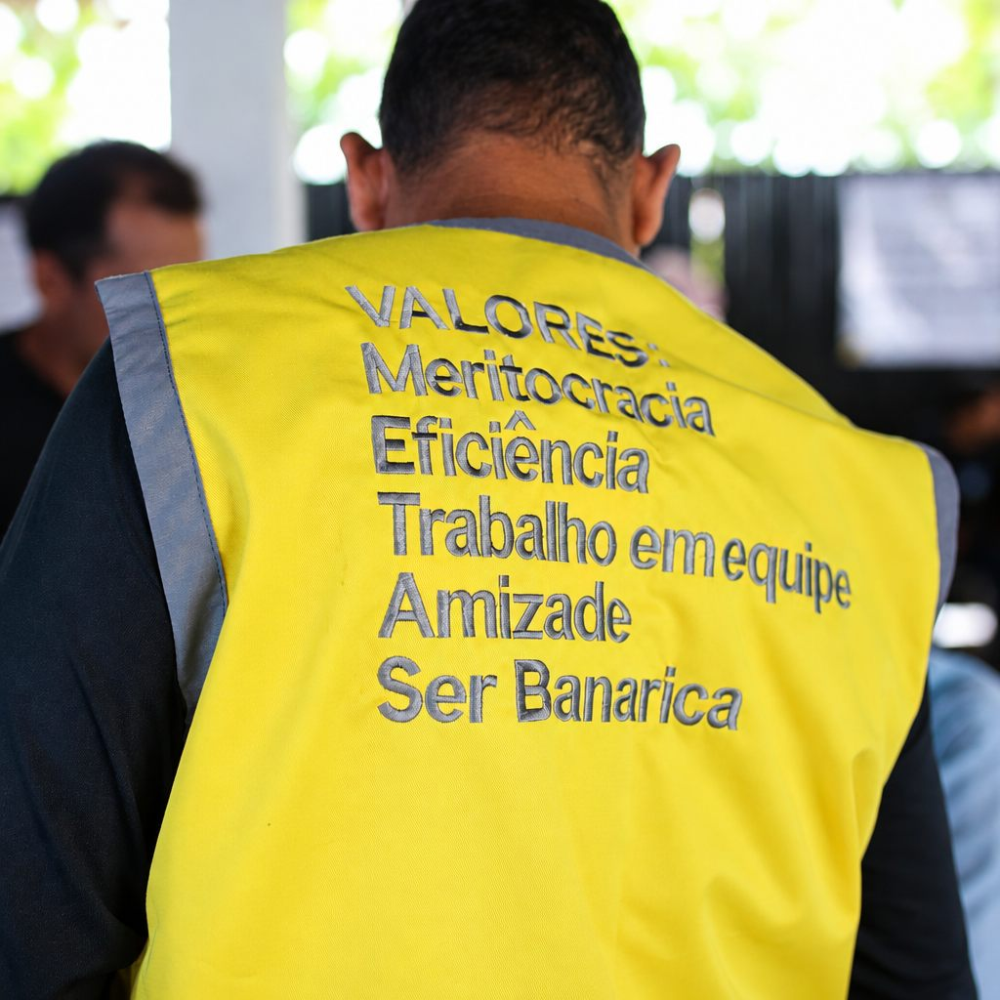
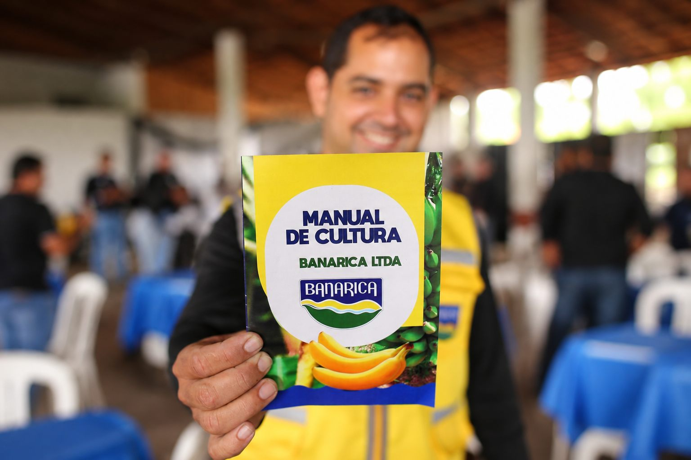
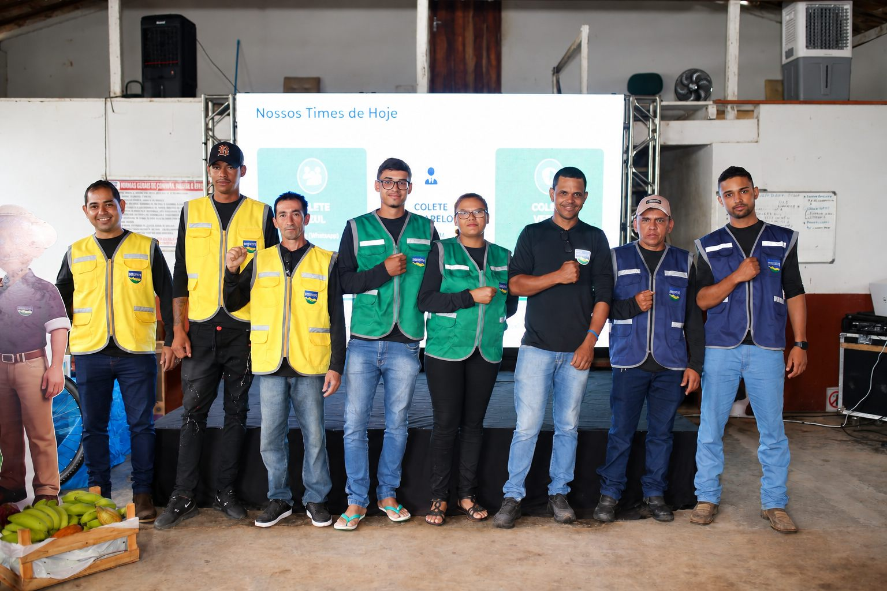

Consultor
Consultor em bananicultura desde 2007
Hoje pela MusaTec, atende produtores, cooperativas e empresas em todo o Brasil.
Conheça na prática como ter equipe de alta performance.

Gabriel cresceu dentro de um bananal. A família produz banana desde 1985, e foi ali, na rotina da fazenda, que ele aprendeu que bons resultados nascem da soma de técnica, gestão e gente bem preparada.
É Engenheiro Agrônomo pela Unimontes, Mestre em Produção Vegetal no Semiárido pelo IF Baiano – Guanambi, MBA em Gestão Empresarial pela FGV e Especialista em Performance e Desenvolvimento Humano.
Consultor em bananicultura desde 2007, hoje pela MusaTec, já levou seu trabalho a produtores, cooperativas e empresas de todo o Brasil. Ao mesmo tempo, é gestor da Banarica e da Ama Agro, com cerca de 300 hectares de banana sob sua gestão no Norte de Minas: é ali que ele testa, na prática, tudo o que ensina.
Como educador rural, criou o método Banana 360 e a live técnica Bananizando, levando esse conhecimento a produtores de todo o país.
Não é teoria de escritório: é o que funciona no campo, aplicado todos os dias em 300 hectares de banana.


Desenvolver a bananicultura brasileira com técnica, gestão e pessoas.

Hoje pela MusaTec, atende produtores, cooperativas e empresas em todo o Brasil.

Cerca de 300 ha de banana sob gestão no Norte de Minas, com equipes organizadas por metas, meritocracia e cultura forte.

Criador do método Banana 360 e da live técnica Bananizando, leva conhecimento prático a produtores de todo o Brasil.
Uma formação completa para olhar a fazenda por inteiro: a planta, o negócio e a equipe.
Universidade Estadual de Montes Claros (Unimontes).
IF Baiano – Guanambi. Pesquisa aplicada à fruticultura irrigada.
Fundação Getulio Vargas (FGV). Gestão financeira, processos e estratégia.
Liderança, motivação e formação de equipes de alta performance.
Nasce a Banarica, empresa familiar onde Gabriel cresceu e hoje é sócio-diretor.
Primeiros atendimentos a produtores, levando técnica e gestão para dentro da lavoura.
Processos administrativos, operacionais e de pessoas implantados e aprimorados na Banarica e na Ama Agro, hoje com cerca de 300 ha de banana sob gestão.
Atuação em todo o Brasil. Criador do método Banana 360 e da live técnica Bananizando, agora também com curso, mentoria e e-book para qualquer produtor do Brasil.
Todo o conhecimento de quase 20 anos de consultoria, organizado para você aplicar na sua fazenda, no seu ritmo.
Método proprietário de gestão operacional da bananicultura, criado para organizar processos, estruturar pessoas e elevar a performance produtiva.
Diagnóstico e evolução da sua produção com base no Banana 360, o método criado por Gabriel, com acompanhamento direto do Gabriel por 8 meses para colocar a mão na massa.
Todos os Procedimentos Operacionais Padrão de tratos culturais para bananicultura. Um guia prático para organizar a rotina da fazenda.
Cultura, metas e reconhecimento: o que Gabriel aplica nas empresas que dirige é o mesmo que ensina no curso, na mentoria e no e-book.



Chame no WhatsApp e fale direto com o Gabriel sobre o curso, a mentoria ou o e-book.
Falar com o Gabriel